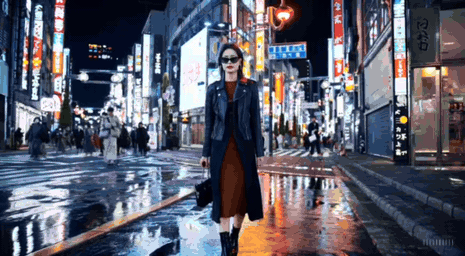
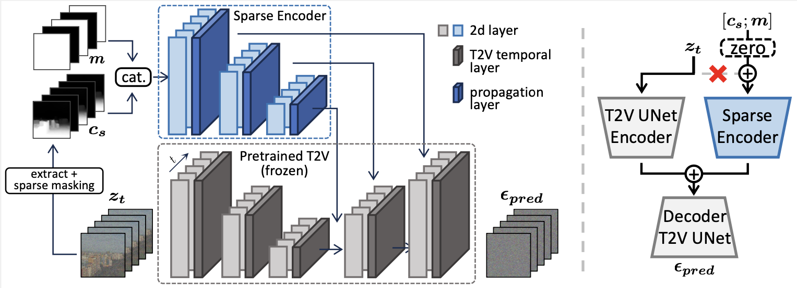
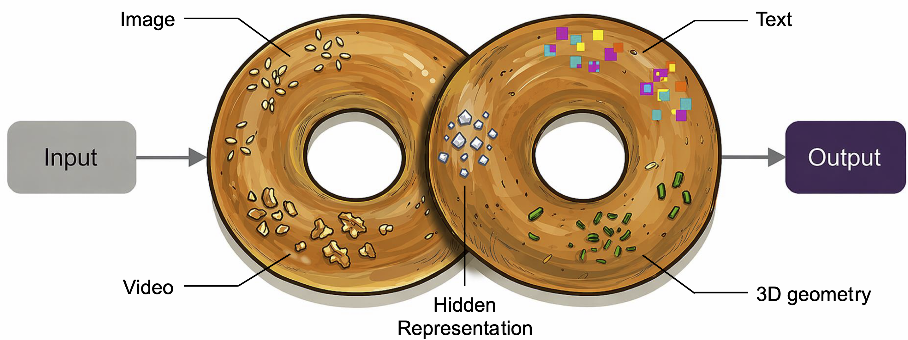
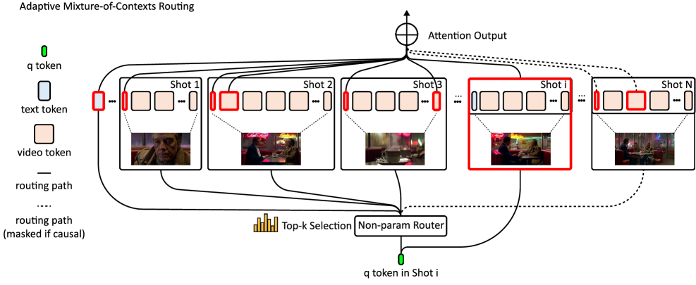
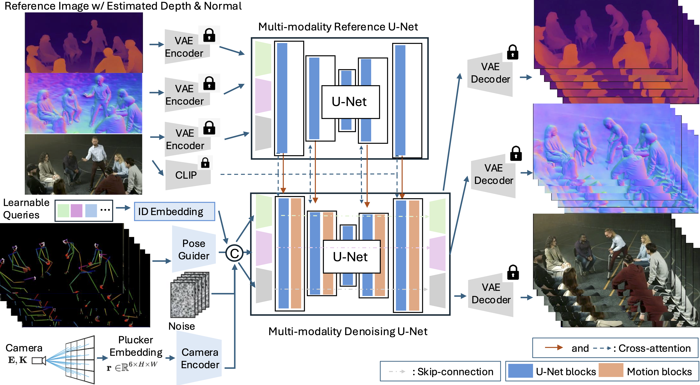
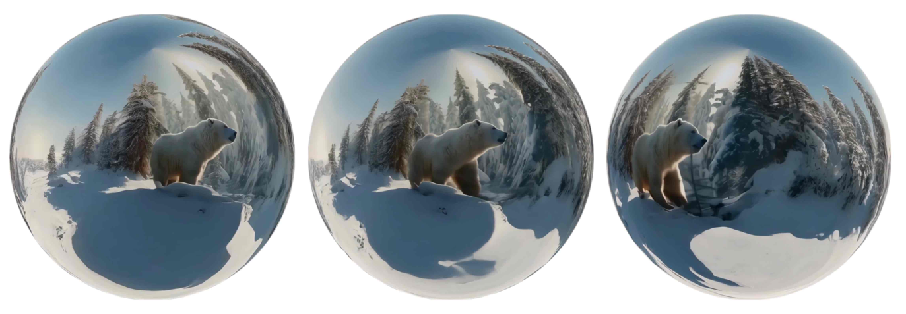
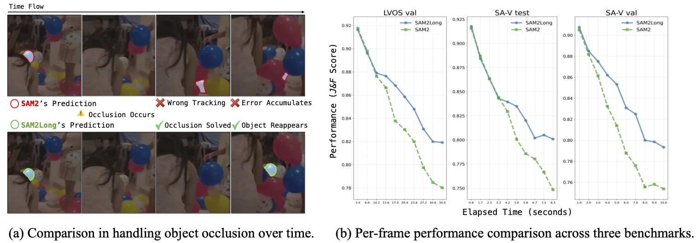
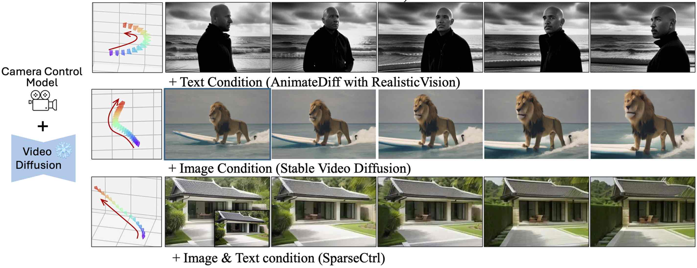
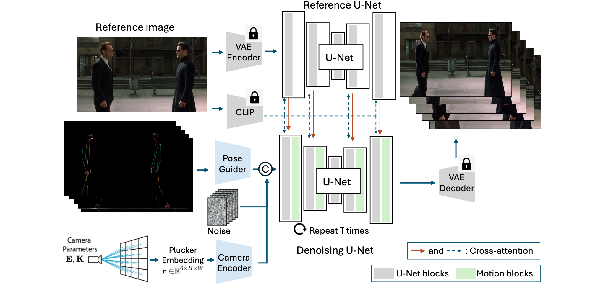
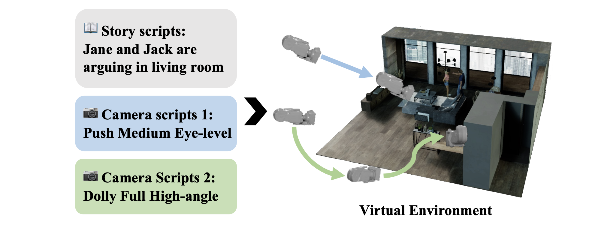

|
Yuwei Guo Hi, I am a final-year Ph.D. at Multimedia Laboratory (MMLAB), The Chinese University of Hong Kong, advised by Prof. Dahua Lin. Prior to that, I received my Bachelor's degree in the Electronic Engineering Department at Nanjing University. My research interests focus on building controllable and scalable multi-modal models to democratize creativity and model the physical world. I am currently a final-year Ph.D. student on the job market. Feel free to reach out if you have relevant openings! |
{kind=link}
Research |

|
End-to-End Training for Autoregressive Video Diffusion via Self-Resampling
Yuwei Guo, Ceyuan Yang†, Hao He, Yang Zhao, Meng Wei, Zhenheng Yang, Weilin Huang, Dahua Lin ECCV, 2026 arXiv / project page |
|
 |
Long Context Tuning for Video Generation
Yuwei Guo, Ceyuan Yang†, Ziyan Yang, Zhibei Ma, Zhijie Lin, Zhenheng Yang, Dahua Lin, Lu Jiang ICCV, 2025 arXiv / project page |
|
VideoRepainter: Keyframe-Guided Creative Video Inpainting
Yuwei Guo, Ceyuan Yang, Anyi Rao, Chenlin Meng, Omer Bar-Tal, Shuangrui Ding, Maneesh Agrawala, Dahua Lin, Bo Dai CVPR, 2025 paper / project page |
|
|
 |
SparseCtrl: Adding Sparse Controls to Text-to-Video Diffusion Models
Yuwei Guo, Ceyuan Yang†, Anyi Rao, Maneesh Agrawala, Dahua Lin, Bo Dai ECCV, 2024 arXiv / project page / code |

|
AnimateDiff: Animate Your Personalized Text-to-Image Models without Specific Tuning
Yuwei Guo, Ceyuan Yang†, Anyi Rao, Zhengyang Liang, Yaohui Wang, Yu Qiao, Maneesh Agrawala, Dahua Lin, Bo Dai ICLR, 2024 spotlight arXiv / project page / code (10k+ stars) |
|
 |
Context Unrolling in Omni Models
Ceyuan Yang, Zhijie Lin, Yang Zhao, Fei Xiao, Hao He, Qi Zhao, Chaorui Deng, Kunchang Li, Zihan Ding, Yuwei Guo, Fuyun Wang, Fangqi Zhu, Xiaonan Nie, Shenhan Zhu, Shanchuan Lin, Hongsheng Li, Weilin Huang, Guang Shi, Haoqi Fan Tech Report, 2026 arXiv / project page |
|
 |
Mixture of Contexts for Long Video Generation
Shengqu Cai, Ceyuan Yang, Lvmin Zhang, Yuwei Guo, Junfei Xiao, Ziyan Yang, Yinghao Xu, Zhenheng Yang, Alan Yuille, Leonidas Guibas, Maneesh Agrawala, Lu Jiang, Gordon Wetzstein ICLR, 2026 arXiv / project page |
|
Captain Cinema: Towards Short Movie Generation
Junfei Xiao, Ceyuan Yang, Lvmin Zhang, Shengqu Cai, Yang Zhao, Yuwei Guo, Gordon Wetzstein, Maneesh Agrawala, Alan Yuille, Lu Jiang ICLR, 2026 arXiv / project page |
|
|
 |
Multi-identity Human Image Animation with Structural Video Diffusion
Zhenzhi Wang, Yixuan Li, Yanhong Zeng, Yuwei Guo, Dahua Lin, Tianfan Xue, Bo Dai ICCV, 2025 arXiv / code |
|
Seaweed-7B: Cost-Effective Training of Video Generation Foundation Model
Seaweed Team, ByteDance Seed (incl. Yuwei Guo) Tech Report, 2025 arXiv / project page |
|
|
 |
Imagine360: Immersive 360 Video Generation from Perspective Anchor
Jing Tan, Shuai Yang, Tong Wu, Jingwen He, Yuwei Guo, Ziwei Liu, Dahua Lin NeurIPS, 2025 arXiv / project page / code |
|
 |
SAM2Long: Enhancing SAM 2 for Long Video Segmentation with a Training-Free Memory Tree
Shuangrui Ding, Rui Qian, Xiaoyi Dong, Pan Zhang, Yuhang Zang, Yuhang Cao, Yuwei Guo, Dahua Lin, Jiaqi Wang ICCV, 2025 arXiv / project page / code |
|
 |
CameraCtrl: Enabling Camera Control for Video Diffusion Models
Hao He, Yinghao Xu, Yuwei Guo, Gordon Wetzstein, Bo Dai, Hongsheng Li, Ceyuan Yang ICLR, 2025 arXiv / project page / code |
|
 |
HumanVid: Demystifying Training Data for Camera-controllable Human Image Animation
Zhenzhi Wang, Yixuan Li, Yanhong Zeng, Youqing Fang, Yuwei Guo, Wenran Liu, Jing Tan, Kai Chen, Tianfan Xue, Bo Dai, Dahua Lin NeurIPS, 2024 Datasets & Benchmarks Track arXiv / project page / code |
|
 |
Dynamic Storyboard Generation in an Engine-based Virtual Environment for Video Production
Anyi Rao*, Xuekun Jiang*, Yuwei Guo, Linning Xu, Lei Yang, Libiao Jin, Dahua Lin, Bo Dai SIGGRAPH, 2023 Poster arXiv / project page |
Experience
2023 Research Intern at Shanghai AI Laboratory
|
Education
2023 - 2027 Ph.D. in Information Engineering, The Chinese University of Hong Kong
|
Miscellanea |
Awards2023 Hong Kong PhD Fellowship2023 CUHK Vice-Chancellor's Scholarship 2020 China National Scholarship |
Talks2023 Invited talk at Kunlun 2050 Research |
Reviewer2025 CVPR, SIGGRAPH, ICML, ICCV, NeurIPS2024 SIGGRAPH, ACM MM, SIGGRAPH Asia, NeurIPS, ICLR, CVPR |
TeachingIERG4998 Final Year Project, Fall 2023IERG4998 Final Year Project, Spring 2024 |
|
Template based on Jon Barron's website. |